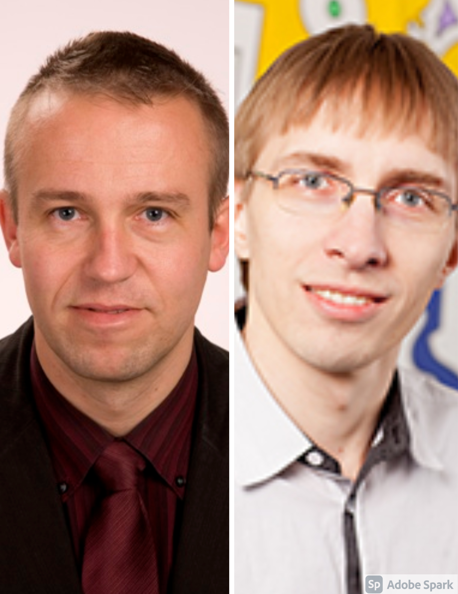

All saad valida esimese semestri aine ja uues aknas avaneb aine ja õppejõu kirjeldus.
| Kõrgem matemaatika I | Matemaatiline maailmapilt | Programmeerimine I | Sissejuhatus erialasse | Arvuti arhitektuur ja riistvara I |
|---|---|---|---|---|
|
|
|
|
 | |
| Ella Puman | Julia Polikarpus | Tauno Palts | Mirjam Paales/Helle Hein | Toomas Plank/Urmas Tamm |